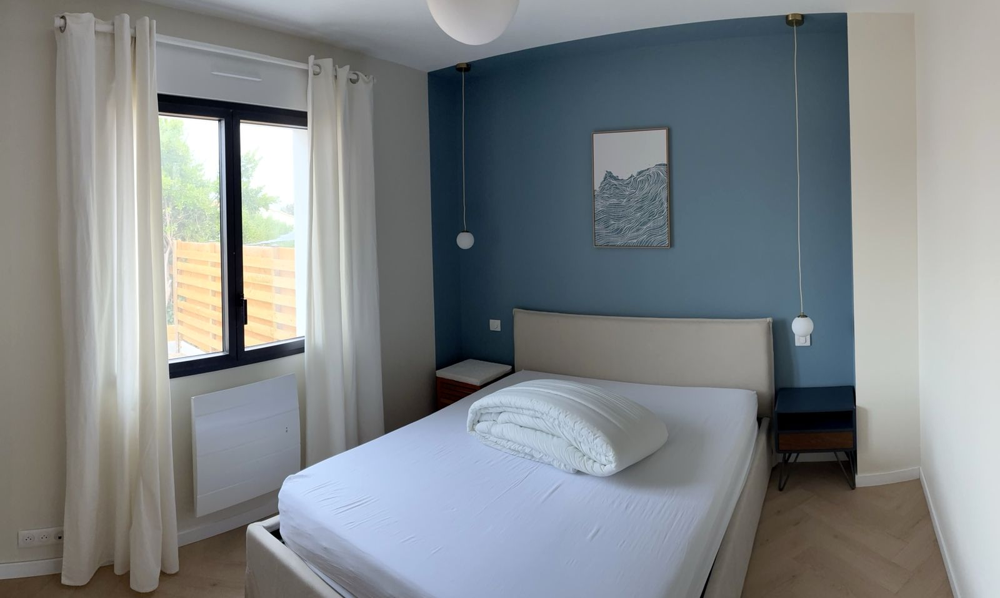
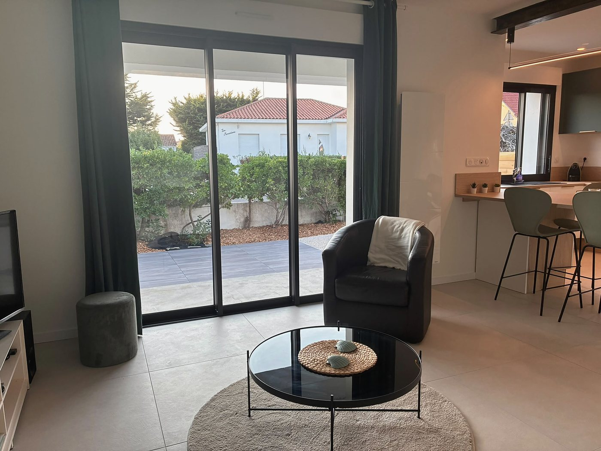
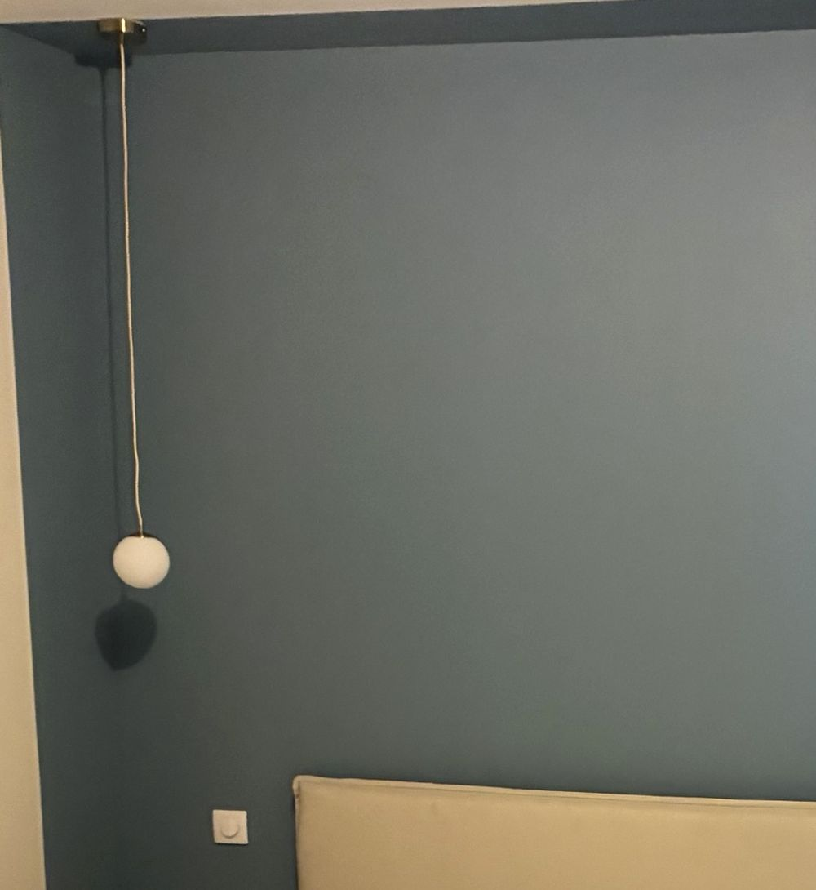
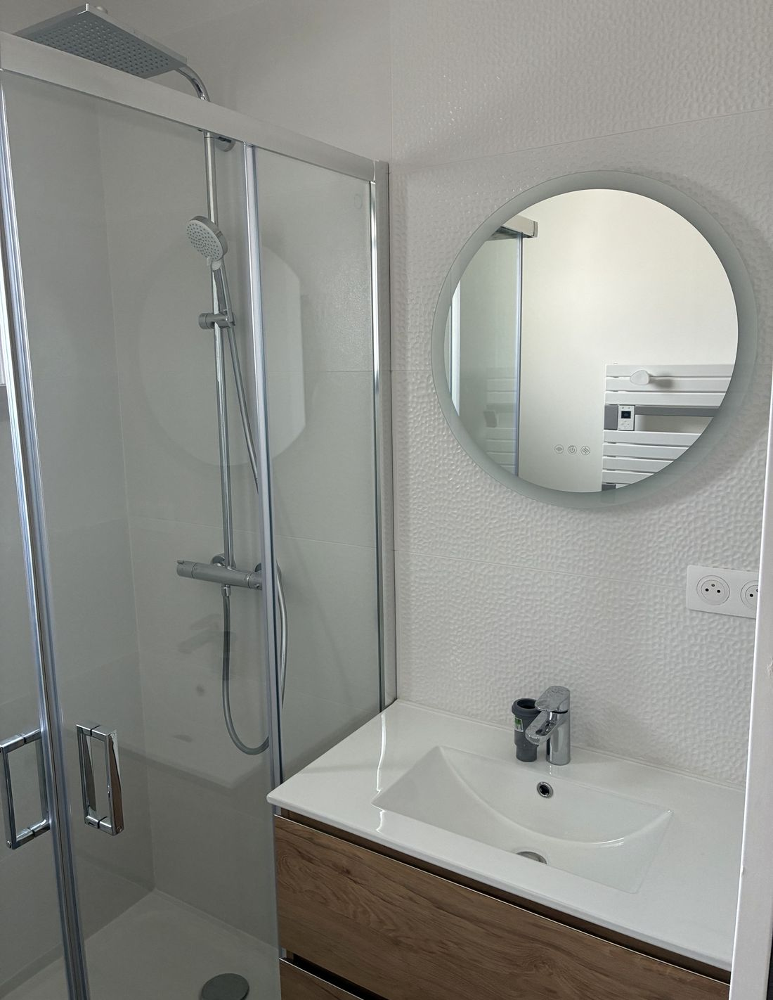
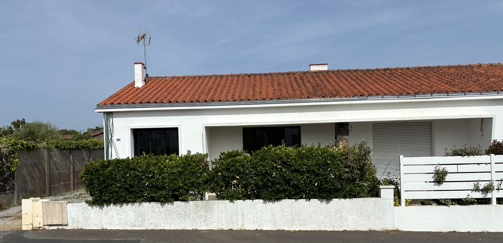
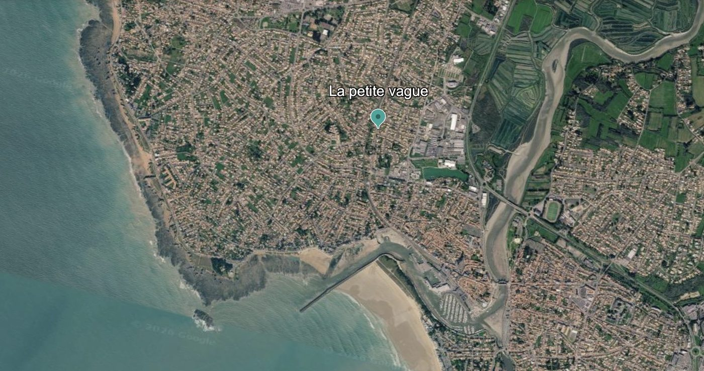
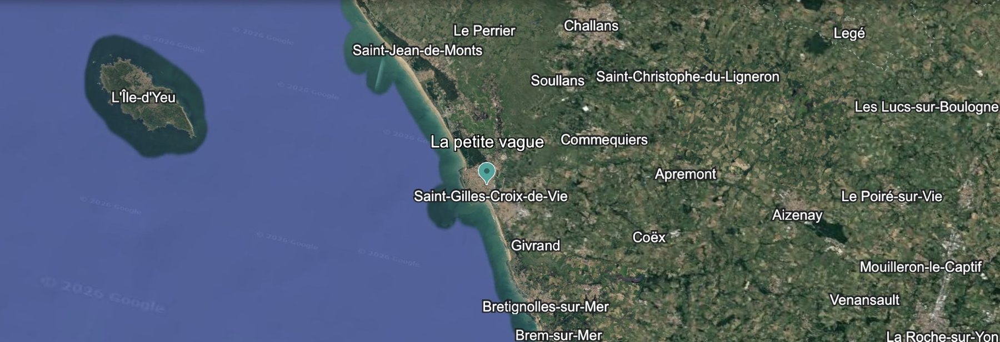

Cinquante-cinq mètres carrés de calme, posés entre l’océan et les marais. Le matin, la lumière monte du marais ; le soir, la mer se retire derrière les dunes et l’on entend le vent passer dans les pins. Le temps d’un week-end, ou de tout un été.

Du bois clair, du lin, des murs couleur de vague et beaucoup de jour. Une chambre, une cabine, et de quoi recevoir deux voyageurs sans rien de superflu : on pose son sac en arrivant, et l’on ne cherche plus rien d’autre.
Les lits sont faits à votre arrivée, les serviettes pliées sur le lit. La cuisine est faite pour cuisiner vraiment — du poisson pris au port le matin, du sel de Vendée, une table que personne ne quitte avant la nuit.



Rien d’obligatoire, bien sûr. Mais voilà à quoi ressemble une journée quand on ne force rien.
Sept minutes de marche jusqu’à la boulangerie, et l’on revient par les chemins du marais : l’eau est plate, les hérons décollent sans bruit. Café sur [la terrasse], le temps que la journée se décide.
Dix minutes à pied et l’on y est : les rochers bruns, le Trou du Diable qui crache l’écume les jours de houle. Puis la plage de Boisvinet, en pente douce, pour le bain et la sieste.
À Saint-Gilles, les sardiniers rentrent en fin d’après-midi. On achète le poisson du jour, on remonte par le pont, et l’on cuisine en laissant la fenêtre ouverte sur le soir.
[Un avis de voyageur, copié depuis Airbnb — deux lignes suffisent.][Prénom] — [mois année]

D’un côté les dunes, la corniche et l’écume qui saute sur les rochers — dix minutes de marche, pas davantage. De l’autre, les marais : des chemins plats, des reflets immobiles et des oiseaux qui s’envolent au petit matin. La maison tient entre les deux, et tout se fait à pied.


Deux communes se partagent l’horizon : Saint-Hilaire-de-Riez côté dunes et marais, Saint-Gilles-Croix-de-Vie côté port. Voici ce qu’on y va voir le plus volontiers — l’office de tourisme tient le reste à jour.
Trois kilomètres de rochers bruns entre Sion et Saint-Gilles, une heure de marche facile. Au Trou du Diable, les jours de houle, la mer remonte par la faille et retombe en écume blanche. Table d’orientation, coucher de soleil face à l’île d’Yeu.
L’itinéraire à piedUne maison de marais basse et blanche, toit de roseaux, bâtie en 1818 et restée dans son jus. Une heure de visite pour comprendre comment on vivait dans le marais breton il y a un siècle. Parfait les jours de pluie.
Le muséeQuatre mille cinq cents hectares d’eau plate et de digues, où l’on récolte encore le sel à la main. Les sauniers ouvrent leurs œillets à la visite en saison ; on repart avec un sachet de fleur de sel.
Visites et découvertesDouze kilomètres de sable : les Demoiselles, les Salins, les Mouettes, la Grande Plage de Sion. À la base nautique des Demoiselles, on loue un kayak, une planche ou un dériveur à l’heure.
Activités nautiquesQuatre mille tonnes de poisson bleu par an — sardine, anchois. En fin d’après-midi, les bateaux rentrent et l’on peut suivre la vente à la criée depuis Escale Pêche, au cœur du port.
Escale PêcheMardi, jeudi et dimanche matin place Saint-Gilles ; mercredi et samedi matin place Sainte-Croix. Poisson du jour, légumes du marais, brioche vendéenne. [Jours à revérifier avant la saison.]
L’agendaLes ruelles basses bâties par les marins avec les pierres de lest rapportées du large, la Maison du Pêcheur, le pont de la Concorde et sa statue de marin qui sert de jauge aux crues.
À voir, à faireLa véloroute du littoral passe ici : pistes plates et abritées vers Saint-Jean-de-Monts au nord, Brétignolles au sud. De quoi faire une journée entière sans jamais quitter le bord de mer.
Activités outdoorL’embarcadère est à dix minutes à pied : on part le matin, une heure de mer, et l’on rentre le soir avec du sel sur la peau. Vingt-trois kilomètres carrés de granit et de pins, à faire à vélo — c’est la bonne échelle.
La traversée
Compagnie Vendéenne, embarcadère avenue Jean Cristau. Une heure de mer, aller-retour dans la journée. Réservez à l’avance en été.
Sur place
Location de vélos à la descente du bateau, à Port-Joinville.
Au sud-ouest, la côte sauvage : les falaises, le port de la Meule au creux de son anse, les criques des Soux, des Fontaines, des Sabias en contrebas du Vieux Château. Au nord-est, le sable long et calme — Ker Châlon, les Sapins, les Conches, les Vieilles. Une trentaine de plages en tout, et l’on finit toujours par en trouver une déserte.
Une forteresse posée sur un îlot de rocher, bâtie entre le XIVᵉ et le XVIIᵉ siècle face au large. Ailleurs sur l’île, des dolmens et des menhirs de cinq mille ans, le Grand Phare, l’église Saint-Sauveur et les quais de Port-Joinville.
Balisés, plats, ouverts au vélo comme à la marche. On fait le tour par le sentier côtier, en s’arrêtant où bon semble.
Les horaires et les tarifs changent au fil des saisons : l’Office de tourisme du Pays de Saint-Gilles-Croix-de-Vie tient tout cela à jour.
La maison ne se ferme pas l’hiver, et c’est peut-être là qu’elle est le plus elle-même.
Les plages sont à vous, les chemins du marais sentent le sel et l’herbe neuve. Les terrasses rouvrent sans la foule et l’eau se réchauffe doucement. La meilleure saison pour le vélo.
Les marchés débordent, les sardiniers rentrent chaque soir, les baignades durent jusqu’à vingt-deux heures. On réserve tôt — et l’on se lève tôt pour avoir la corniche pour soi.
L’eau est encore bonne, la lumière devient dorée et tout redevient tranquille. Beaucoup la préfèrent à l’été, et l’on comprend pourquoi.
Le chauffage, un pull, et la corniche sous le vent : c’est le moment où le Trou du Diable crache le plus haut. On rentre se faire un thé, et la maison fait le reste.
Vous arrivez les mains vides : le linge est fourni, les lits sont faits, la cuisine est équipée pour de vrais repas.
Tout est aussi rappelé dans le livret d’accueil, posé sur la table en arrivant.
Oui, et c’est même recommandé. Les commerces sont à sept minutes à pied, la corniche à dix, la plage à quinze, le port à vingt. Le train s’arrête à Saint-Hilaire-de-Riez, et l’embarcadère pour l’île d’Yeu est à dix minutes de marche. Une voiture ne sert que pour aller plus loin dans les terres.
La Bourrine du Bois Juquaud, Escale Pêche au cœur de la criée, les musées de Saint-Gilles, le marché couvert. Et la maison : les tempêtes vues de la corniche sont un spectacle, et l’on rentre se sécher au chaud.
[À compléter : capacité réelle avec la cabine, lit enfant ou parapluie disponible, équipement bébé.]
Oui. Les lits sont faits à votre arrivée et le linge de toilette vous attend dans la salle d’eau. Vous n’avez rien à apporter.
Les réservations passent uniquement par Airbnb : le calendrier y est tenu à jour et les conditions d’annulation sont celles affichées sur l’annonce. Pour une question avant de réserver, la messagerie Airbnb est le plus simple.
Le calendrier et les tarifs y sont tenus à jour au fil des saisons — basse lumière d’hiver, matins de juin, plein été. Quelques clics, et la maison vous attend, volets ouverts.
Une question avant de réserver ? La messagerie Airbnb reste le plus simple : on répond vite, et volontiers.